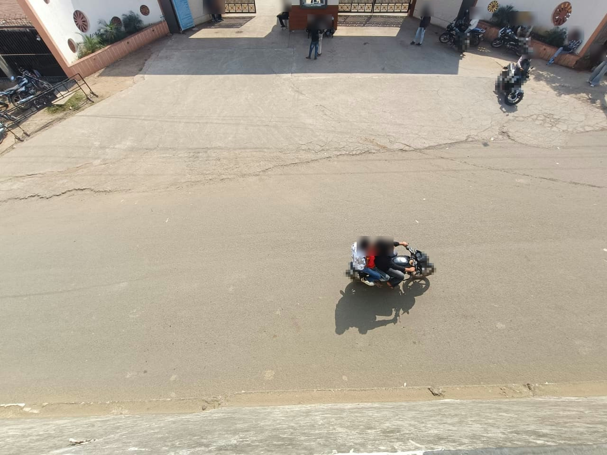

01
Film
One phone, high up, and a tape measure. Eight sheets of A4 on the road turn pixels into metres. Two more lines 15 m apart are the check.
8 m × 7 m taped · 15 m held outFilm your school or college gate with one phone. Meta SAM 3.1 tracks every person and vehicle, code measures each near-miss in road metres, and Muse Spark writes a letter whose every number is checked.
A service road under the highway. No zebra, no signal. At dismissal, students pour out of the gate into motorcycles, autos and buses. Everyone knows it is dangerous. Nobody had a number.

Time-lapse still from the real video: the motorcycle every half second, then the person. Wider spacing means faster. Faces and number plates blurred.
One phone, high up, and a tape measure. Eight sheets of A4 on the road turn pixels into metres. Two more lines 15 m apart are the check.
8 m × 7 m taped · 15 m held outMeta's Segment Anything model (SAM 3.1) finds and follows every person, motorcycle, auto, car and bus, frame by frame.
Meta SAM 3.1Who reached the same spot, how many seconds apart, at what speed. Muse Spark looks at each person and throws out riders and shadows; Muse Wonder listens for horns and brakes.
Muse Spark · Muse WonderA letter to the road authority from the measurements only. Code checks every number; legal quotes come from code; two judges read it.
Muse Spark · Muse GlimmerThe college certified in writing that the footage was filmed at its gate with permission and that the report is genuine. The letter is ready for the road's owner, with the evidence page and blurred clips.
3 November"Of the 51 people who crossed, 3 had a moving vehicle through their spot within 3 s, and 1 within 1.5 s. I request a painted zebra crossing at the gate with no hump and no speed breaker, as our college buses use this road, and College Zone 20 km/h signs on both approaches."
Written by Muse Spark from the measurements only · every number checked by code · the college certified the report genuine on 3 November.
A painted zebra crossing at the gate and College Zone 20 km/h signs on both approaches. No hump: our college buses use this road. Drawn by Muse Image so the college and the road authority can see the crossing.
Then we film the same gate again. The pass mark is written before any fix exists: the pass mark is written down in advance.
Finds and follows every person and vehicle, frame by frame.
✓ 47 of 52 near-misses found on top-down drone footage
Checks each person, runs the agent, writes the letter.
✓ 70 riders and non-people removed · 24 / 24 planted false numbers caught
Draws the fix we ask for on our real gate.
✓ Painted zebra and 20 km/h signs, labelled AI-drawn
Listens around each near-miss for horns and brakes.
✓ Heard horns around 4 of the 5 near-misses
Writes letters, and fine-tuned by us, judges them.
✓ A letter in 276 s on a free GPU · 3 blind-test wins over Muse Spark Open
Second judge of our real letter.
✓ 6 of 6 reads: no unsupported claim
Muse Glimmer 30B wrote a full, code-checked letter for our gate in 276 s on Kaggle's free T4s, first try. Muse Spark Open read our real letter six times and found no unsupported claim. Our fine-tuned Glimmer judge beats Muse Spark Open in three pre-registered blind tests and was served live on Fireworks.
Any school or college in India can do this. Every number on this page has its record in the repository.
Try the live explorer → Open our gate's evidence dashboard → Read the code